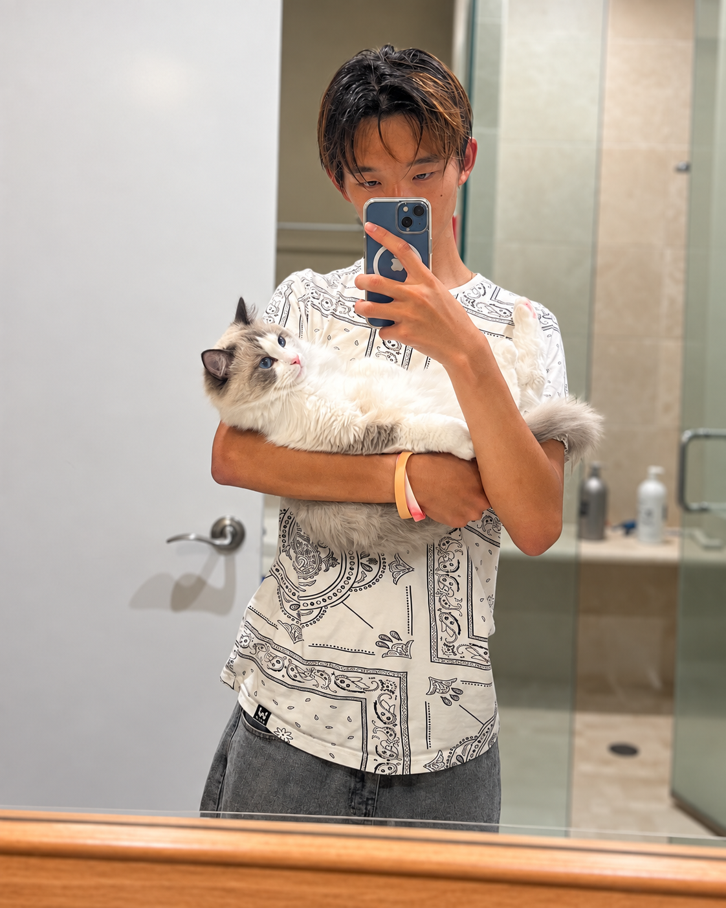

Lucas Su
Hi, I'm Lucas, a high schooler at Lynbrook High School. I'm interested in building creative projects in coding and machine learning. Outside of academics, I love to watch YouTube, go snowboarding, and take photos. Fun fact: I also have a cat named Loki, named after the god of mischief because he's one of my favorite Marvel characters :)
This site is a collection of my work.

Projects
Explore my coding, machine learning, research, and creative projects.
USAAIO Guide
A Global AI Olympiad Learning Platform.
Research
Research submitted to the NeurIPS 2026 PTA Workshop.